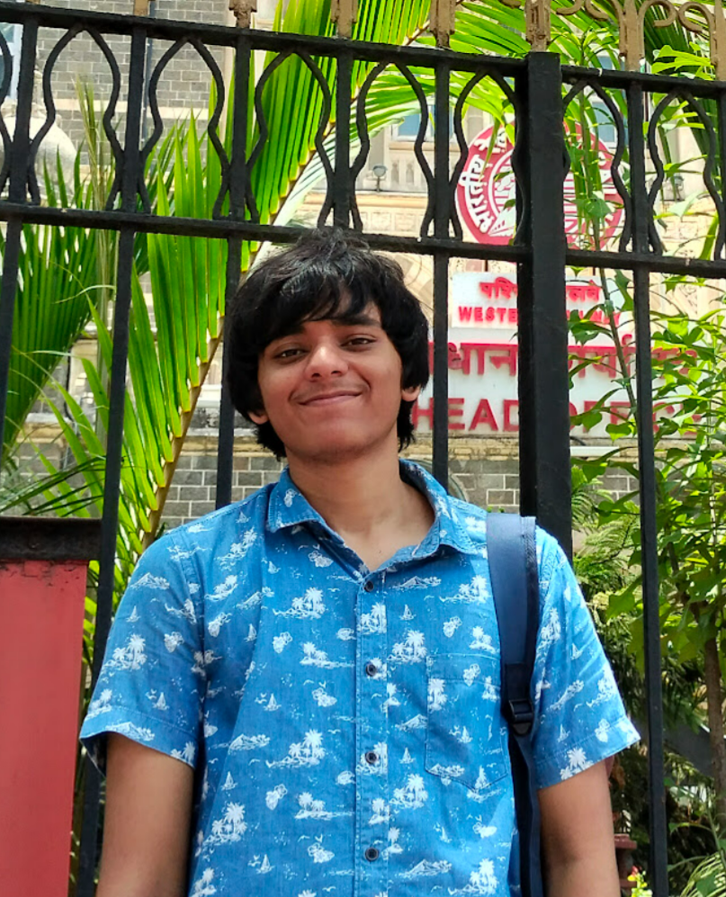
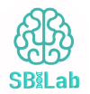

Machine Learning Researcher & Computational Biologist
Currently working on ECG-based cardiovascular disease classification using Vision Transformers and parameter-efficient fine-tuning at SBILab, IIIT-Delhi. Specialized in biomedical prediction models, molecular simulations, and deep learning applications in healthcare.

Research Experience
Publications and ongoing research in machine learning and computational biology
Research Associate - SBILab, IIIT-Delhi
Aug 2025 - Ongoing Current PositionWorking with Prof. Anubha Gupta on ECG-based subclass classification for cardiovascular diseases using a custom Vision Transformer. Exploring parameter-efficient fine-tuning methods, extensions of LoRA and custom adapters for medical signal analysis.
Research Assistant - SBILab, IIIT-Delhi
Mar 2025 - Aug 2025ECG-based Subclass Classification for Cardiovascular Diseases using Transformers, Signal Processing and Deep Learning. Also worked on a review of risk calculators for Multiple Myeloma staging.
Research Intern - IISc Physics Department
Jun 2024 - Jul 2024Under Prof. Prabal Maiti's guidance, conducted research on predicting binding affinities in antibody-antigen binding. Employed ChimeraX, Modeller, and GROMACS for protein structure analysis and molecular dynamics simulations.
Published Research - Epilepsy Research Journal
2023-2024 Published"Predicting Efficacy of Antiseizure Medication Treatment with Machine Learning Algorithms in North Indian Population" - Conducted predictive modeling for anti-epileptic drug outcomes using patient data with six ML algorithms, achieving over 70% accuracy.
Student Researcher - CIC, University of Delhi
2023-2024Disease–Disease SNP Network Analysis and Community Detection. Analyzed disease networks using SNP data, built graphs with NetworkX, applied Louvain and SLPA for community detection.
Work Experience
Professional experience and internships

Research Associate
SBILab, IIIT-Delhi
Methods for Parameter Efficient Finetuning and CVD Subclass classification using Vision Transformers. Working with Prof. Anubha Gupta on advanced ECG analysis techniques and model optimization.

Machine Learning Intern
Beyond Exams
Developed a machine learning model to classify YouTube videos into educational categories using self-scraped datasets. Involved data scraping with YouTube V3 API, BeautifulSoup, Selenium, and model building in ML.NET (C#).
Education
Bachelor of Technology (B.Tech.)
Cluster Innovation Centre, University of Delhi
IT & Mathematical Innovations, Computational Biology
Relevant Courses:
Featured Projects
Open source projects and technical implementations

Semantic Search Engine
Developed a semantic search engine using SentenceTransformers and Streamlit. Integrated SerpApi's Google Search API for enhanced results and ranking.

Chronicles of Alexandria
Created a comprehensive library for documentaries with semantic search using Pinecone and SentenceTransformers. Flask backend with vector search capabilities.

Data Analyzer with AI
Built an intelligent data analyzer that uses AI to select and generate optimal visualizations from raw datasets. Implemented in Flask and Streamlit.

AI Adversarial Agent
Developed a browser extension that cloaks images via adversarial perturbations to protect identities from recognition software.
Volunteering & Mentorship
Mentor/Speaker – DYOD Induction Program
Jammu University
20–23 September 2023
Served as a mentor and speaker at the induction program for the first batch of the Design Your Own Degree (DYOD) program. Mentored students on presentations, project development, innovative thinking, and conducted ice-breaking sessions.
Let's Connect
Interested in research collaboration, discussing machine learning projects, or just want to chat about computational biology?
siddharthamahajan03@gmail.com
GitHub
Siddhartha-Mahajan
siddharthamahajan03
Phone
+91-7599-063750